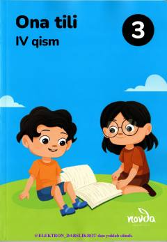

OT3-sinf o'quvchilari uchun ona tili fanidan o'quv darsligi.
Ushbu darslik umumiy o'rta ta'lim maktablarining 3-sinf o'quvchilari uchun mo'ljallangan ona tili fanidan o'quv qo'llanmasidir. Kitob o'quvchilarning nutq va lug'at boyligini oshirish, imloviy savodxonlik hamda husnixat ko'nikmalarini shakllantirishga xizmat qiladi.